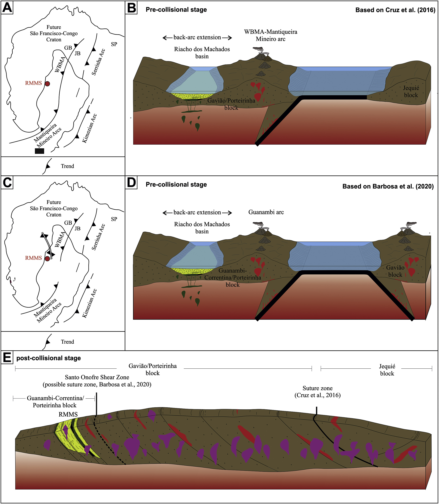

Geochemistry and U-Pb zircon ages of the metamafic-ultramafic rocks of the Riacho dos Machado metavolcanosedimentary sequence: Evidence of a late Rhyacian back-arc basin during the assembly of São Francisco-Congo paleocontinent.

Resumo em Português
O paleocontinente São Francisco compreende núcleos Arqueanos e arcos magmáticos Paleoproterozoicos amalgamados durante eventos termotectônicos Sideriano-Orosirianos (~2,4–2,0 Ga). Localizada no domínio Porteirinha, a sequência metavulcanossedimentar Riacho dos Machados engloba metamafitos e metaultramafitos intercalados com rochas metassedimentares. Os metamafitos do Tipo I são toleíticos, apresentam afinidades similares a MORB e padrões planos de ETR com enriquecimento em La, Rb e Cs. Os metamafitos do Tipo II são calc-alcalinos, exibindo assinaturas de arco com enriquecimento em LILE (Cs, Ba, U, Rb, K) e ETRL, e depleção em HFSE. Os metaultramafitos associados foram classificados como rochas ultramáficas de alto-Mg similares a komatiitos do tipo Barberton.Análises U-Pb (LA-SF-ICP-MS) em zircão do hornblendito do Tipo II revelaram uma idade de cristalização concordante de 2071 ± 9 Ma, com zircões herdados fornecendo uma idade discordante de 2922 ± 22 Ma e intercepto inferior em 473 ± 48 Ma. O magmatismo híbrido dos metamafitos estudados, aliado aos grãos de zircão herdados, indica que esta sequência metavulcanossedimentar foi desenvolvida em uma bacia de retroarco intracontinental. As rochas do Tipo I foram originadas de uma fonte similar a MORB com aporte subordinado de fluidos derivados de subducção, enquanto as amostras do Tipo II representam fundidos mais influenciados pelos fluidos da placa desidratada. Essa interpretação implica que o paleocontinente São Francisco, na região do bloco Porteirinha, estava em estágio acrecionário no Riaciano tardio, com o evento termotectônico sendo provavelmente responsável pela percolação de fluidos auríferos na Mina de Ouro Riacho dos Machados.